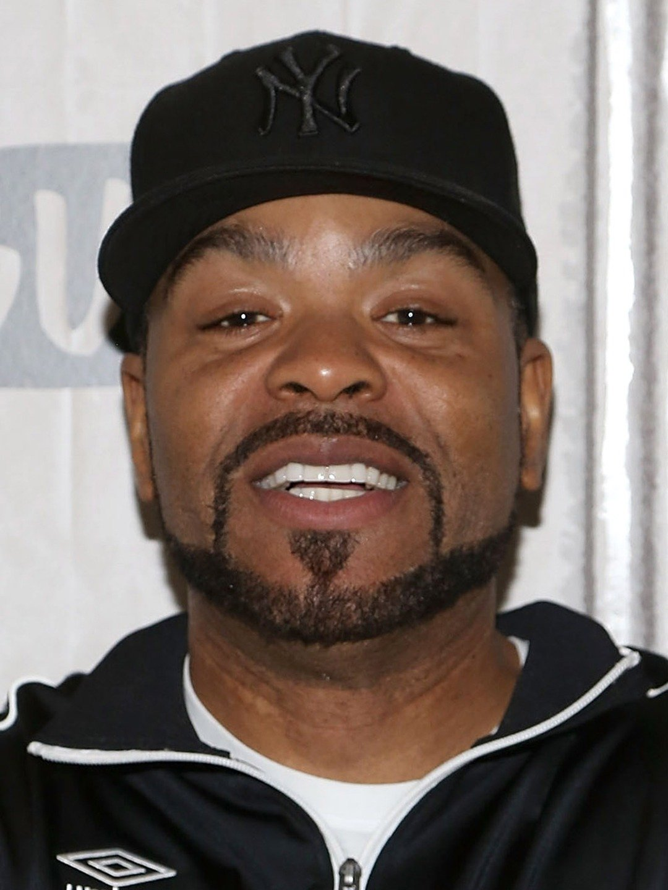

Joost Klein (född 10 november 1997), känd mononymt som Joost, är en nederländsk musiker, rappare, sångare och tidigare YouTuber.
Huvudsakligen en hiphopartist, hans låtar och framträdanden inkluderar ofta influenser från elektronisk musik, som drum and bass, hardstyle och gabber.
Han har släppt åtta studioalbum, varav två nådde topp tio på den nederländska albumlistan.
Han har samlat fyra listplaceringar på den nederländska Top 40-listan och är mest känd för låtarna "Scandinavian Boy", "Wachtmuziek" och "Friesenjung".
Han är inställd att representera Nederländerna i Eurovision Song Contest 2024 med låten "Europapa",
vilket blev hans första låt att toppa den nederländska singellistan.
Alex G (Sandy Alex G)
Alexander Giannascoli, född 3 februari 1993, mest känd under sitt artistnamn Alex G eller tidigare (Sandy) Alex G, är en amerikansk
artist från Philadelphia, Pennsylvania i USA. Han inledde sin karriär som DIY-artist med utgivningar på Bandcamp.
Han började få uppmärksamhet med sin första studioskiva DSU, som utgavs på Orchid Tapes och fick ett varmt mottagande från kritikerkåren.
Han utgav sedan studioalbumen Rules och Trick på skivbolaget Lucky Number. 2015 släppte han sin första skiva på Domino Records, Beach Music,
vilken följdes av Rocket 2017. 2019 släpptes hans albumet House of Sugar, följt av hans nionde studioalbum God Save the Animals 2022.
Hans låt "Treehouse" från 2011, med Emily Yacina som sångare, blev under 2020 viral på Tiktok vilket ledde till att Alex G fick möjligheten
att stå för huvudlåten åt filmen We're All Going to the World's Fair.
Hoodrich Pablo Juan
Sterling Leroy Pennix Jr. (född den 28 oktober 1988), mer känd under sitt artistnamn Hoodrich Pablo Juan, är en amerikansk rappare.
Han är mest känd för sin låt "We Don't Luv Em". Pennix började satsa på en rapkarriär år 2014 efter att han släppte en låt med titeln
"Go Get Money" och medverkade på en Peewee Longway-låt med titeln "African Diamonds". Han släppte en rad mixtapes mellan 2015 och 2017,
och senare skrev han på för Gucci Mane's skivbolag 1017 Records. Han fick uppmärksamhet med sin låt "We Don't Luv Em".
My Bloody Valentine (MBV)
My Bloody Valentine (ofta stiliserat med små bokstäver eller förkortat som MBV) är ett irländsk-engelskt alternativrockband bildat i Dublin
år 1983 och bestående sedan 1987 av grundarna Kevin Shields (sång, gitarr, sampler) och Colm Ó Cíosóig (trummor, sampler),
tillsammans med Bilinda Butcher (sång, gitarr) och Debbie Googe (bas). Ofta citerade som en banbrytande akt inom shoegaze-genren,
kännetecknas deras sound av dissonanta gitarrtexturer, dämpade och androgyna sånginsatser samt oortodoxa produktionsmetoder.
Efter flera misslyckade tidiga utgåvor och medlemsförändringar skrev My Bloody Valentine på för Creation Records år 1988.
Bandet släppte flera framgångsrika EP-skivor och albumen Isn't Anything (1988) och Loveless (1991) på skivbolaget; det senare
beskrivs ofta som deras mästerverk och ett av de bästa rockalbumen genom tiderna. Dock blev My Bloody Valentine borttagna från Creation
efter dess utgivning på grund av albumets omfattande produktionskostnader. År 1992 skrev bandet på för Island Records och spelade
in flera album med opublicerat material, och förblev i stort sett inaktiva. Googe och Ó Cíosóig lämnade bandet år 1995, och Butcher
följde efter år 1997. På grund av oförmåga att slutföra en uppföljare till Loveless isolerade sig Shields och, i sina egna ord, "blev galen".
År 2007 återförenades My Bloody Valentine och genomförde sedan en världsturné. De släppte samlings-EP-skivorna 1988-1991 år 2012.
Deras länge eftersökta tredje studioalbum, m b v, släpptes år 2013 till kritikerros och stöddes av ytterligare turnéer.
Method Man
Clifford Smith, Jr. (född den 2 mars 1971), bättre känd under sitt artistnamn Method Man, är en amerikansk rappare, skivproducent och skådespelare.
Han är medlem i den östkust-baserade hiphop-kollektivet Wu-Tang Clan och utgör ena halvan av hiphop-duon Method Man & Redman.
Han tog sitt artistnamn från filmen Method Man från 1979. År 1996 vann Method Man en Grammy Award för Bästa Rap Prestanda av en
Duo eller Grupp för "I'll Be There for You/You're All I Need to Get By", med R&B-sångerskan Mary J. Blige, med vilken han för närvarande
medverkar i Power Book II: Ghost, en spin-off av Power. Method Man har medverkat i filmer som 187 (1997), Belly (1998), How High (2001), Garden State (2004),
The Wackness (2008), Venom (2005), Red Tails (2012), Keanu (2016) och The Cobbler (2014). Han och den flitiga samarbetspartnern rapparen
Redman medverkade också i den kortlivade Fox-tv-sitcomen Method & Red. Han har också haft återkommande roller i tre HBO-serier,
som Tug Daniels i Oz, Melvin "Cheese" Wagstaff i The Wire och Rodney i The Deuce. Method Man har också medverkat i TBS-komediserien The Last O.G..

Jayo Felony
B. James Savage (född den 31 december 1969), mer känd under sitt artistnamn Jayo Felony, är en amerikansk rappare från The Yay Area, Kalifornien.
År 1994 skrev Jayo Felony kontrakt med skivbolaget ägt av Jam Master Jay från Run-DMC kallat Jam Master Jay Records. Det året släppte Jayo Felony
sitt debutalbum, Take a Ride. År 1998 släppte han sitt uppföljaralbum, Whatcha Gonna Do? på Def Jam. Det inkluderade rappare som
Method Man, DMX, Mack 10, WC, Redman, Kokane, Ice Cube, E-40 och 8 Ball & MJG. År 1999 släppte han Underground som innehåller en gästframträdande
av San Diego-rapparen The Toven på låten "Du Lo Gang". Det fanns diskussioner om att släppa ett fjärde album, Hotter Than Fish Grease, år 2000, men
projektet släpptes inte av okända anledningar. År 2001 släpptes hans fjärde studioalbum Crip Hop och hade flera gästframträdanden.
Jayo Felonys femte studioalbum, självbetitlat James Savage, släpptes sent 2019 på skivbolaget Open Bar Entertainment.
Samma år gjorde han sin skådespelardebut i WorldStarHipHop-miniserien Broken Ground.